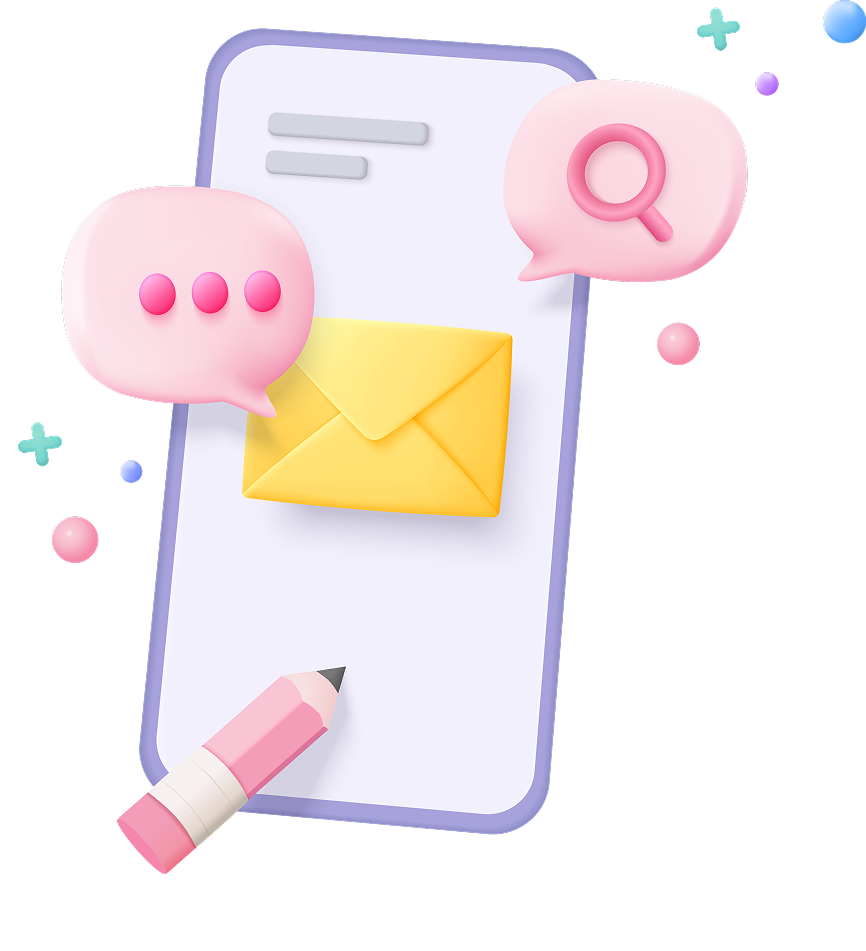
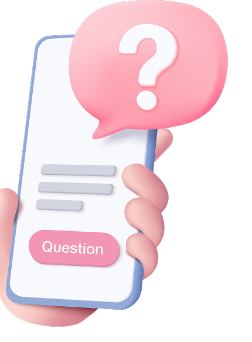
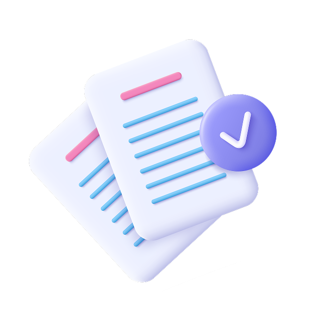

Розважальний
Це вікторина найпростішого формату. Застосовуються для залучення користувачів до проекту, збільшення охоплення та лояльності його аудиторії, підвищення впізнаваності компанії, розміщення нативної реклами
Почніть використовувати квізи на сайті та в соціальних мережах та отримайте додатковий дохід
Дізнатись детальніше

Квізи – це тести, вікторини та опитування, які можна використовувати не лише для розваги. За останні кілька років тести стали повноцінним маркетинговим інструментом, який допомагає просуванню будь-якого проекту.
Квіз допомагає брендам краще дізнатися споживача, отримати недорогі ліди і досягти більшої залучення аудиторії.
Квізи – інструмент із високою конверсією.Дослідження показують, що користувачі відкривають 82% квізів, які трапляються їм у стрічці, та активно діляться результатами після проходження.
Які існують основні типи та види квіз-тестів:
